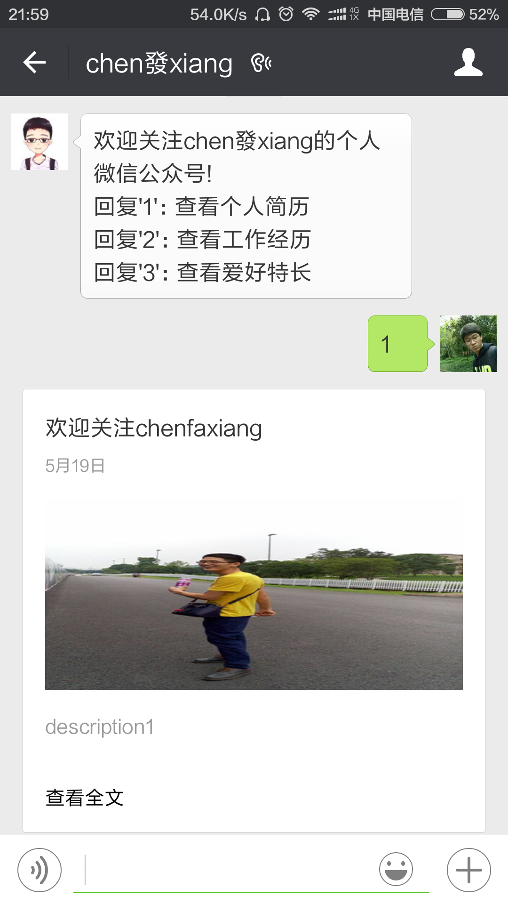

在第一节完成微信demo部署到SAE服务器的基础上，本次学习了怎样进行关注公众号进行默认回复、回复关键词时进行反馈及反馈信息分为文本和图文信息展示。
关注公众号自动回复
在使用微信时时常会关注别人的微信号，在关注成功之后系统会默认回复一条信息进行提示，因此这里进行了学习；通过查看开发者文档发现微信目前提供五种消息类型，分别为：
- 文本消息(text);
- 图片消息(image);
- 地理位置消息(location);
- 链接消息(link);
- 事件推送(event);
- 接收到消息后首先会对消息类型进行判断，然后再针对不同的消息类型做出处理，通过文档发现关注微信号属于订阅事件即在被关注时会产生一个订阅事件(subscribe事件)；那么，判断此事件后就能够做出相应的提示和操作；在函数responseMsg()中添加如下代码即可：$ev = $postObj->Event;if ($ev == "subscribe") {$msgType = "text";$contentStr = "欢迎关注chen發xiang的个人微信公众号!\n回复'1'：查看个人简历\n回复'2'：查看工作经历\n回复'3'：查看爱好特长";$resultStr = sprintf($textTpl, $fromUsername, $toUsername, $time, $msgType, $contentStr);echo $resultStr;}
回复关键词时进行反馈(反馈分为文本和图文展示)
- 在完成上面的内容之后，进行消息回复，回复1、2、3和其他分别展示不同的内容，这里可以通过switch对回复的关键字判断在之后再进行回复显示；仍然在responseMsg()函数中添加代码，如下：if(!empty( $keyword )) {//$msgType = "text";switch ($keyword) {case '1'://$contentStr = "查看个人简历!";$textTpl = "<xml><ToUserName><![CDATA[%s]]></ToUserName><FromUserName><![CDATA[%s]]></FromUserName><CreateTime>%s</CreateTime><MsgType><![CDATA[news]]></MsgType><ArticleCount>1</ArticleCount><Articles><item><Title><![CDATA[欢迎关注chenfaxiang]]></Title><Description><![CDATA[description1]]></Description><PicUrl><![CDATA[http://1.wxchenfx.applinzi.com/images/1.jpg]]></PicUrl><Url><![CDATA[http:www.chenfx.com.cn]]></Url></item><item><Title><![CDATA[个人简历]]></Title><Description><![CDATA[description]]></Description><PicUrl><![CDATA[http://1.wxchenfx.applinzi.com/images/1.jpg]]></PicUrl><Url><![CDATA[http:www.chenfx.com.cn]]></Url></item></Articles></xml>";break;case '2'://$contentStr = "查看工作经历!";break;case '3'://$contentStr = "查看爱好特长!";break;default://$contentStr = "其他功能正在开发中……";break;}//$resultStr = sprintf($textTpl, $fromUsername, $toUsername, $time, $msgType, $contentStr);$resultStr = sprintf($textTpl, $fromUsername, $toUsername, $time);echo $resultStr;}else{echo "Input something...";}
代码中用双斜线(//)注释掉了一些内容和未注释的内容，在查看开发者文档就可以发现这里是文本模式和图文模式，在回复关键字1时文本模式有文本介绍，图文模式当然就是以图文素材的模式进行显示，图文模式中有两个<item>标签，这里即为双图展示，如果去掉一个即为单图模式，单图模式中<description>才会有所功能体现，多图模式下其没有任何作用；除此之外，有<title>进行题目提醒及图片地址<PicUrl>和图文信息访问地址<Url>；最后通过函数sprintf()将信息进行处理及返回就能够成功在微信上得到自己所编辑的信息。如下图：

END~~